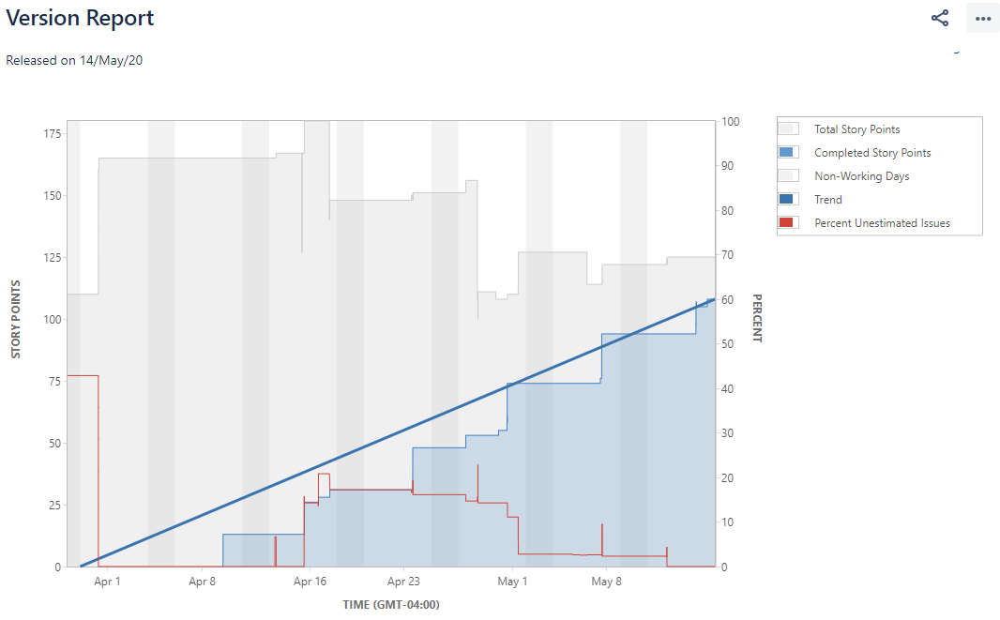

Estimating for Iteration
with Thin Vertical Slices and Story Points tsmith512.github.io/estimate-with-points-and-slices
Taylor Smith
Product Owner
@ Four Kitchens
tsmith512 on
Github,
Twitter,
LinkedIn,
Drupal.org,
Instagram, and
sometimes seen at Four Kitchens.
4K uses Scrum…
…to manage our projects. I see estimating by complexity and building vertically to be the most useful parts of this system.
So a new project comes in…
Clients have big wishlist items.

Let's call that an epic.
- Epic
- A “big ticket/story” or large piece of functionality. It's not actionable or easily estimated on its own because of its size or complexity, or because it has a lot of parts.
What to do with an epic?

Break it down. Into thin vertical slices.

What are thin vertical slices?
What are thin vertical slices?
Estimate precision drops as complexity/size increases.
Like making a to-do list.
Break epics into individual, actionable pieces of work.
Framing them as Stories
It's easier to think about what a user should be able to do when the thing is complete.
Let's call that a User Story
- User Story
-
As a I want to so that .
An identified audience or user persona wants to perform a single action to accomplish a goal.
Not a Scrum requirement — an optional extra.
Example A: Cyclist
As a cyclist, I want to stop the bike so that I don't get hurt.
Three Gotchas with Stories
Personas
Should be an actual audience. Be skeptical of “As a user,” stories.
Actions
Avoid technical prescription.
Goals
Don't add surprise functionality here → that's a new story.
Example B: Don't Do This
- Bad Story
-
As a user,
I would like to create an account during check-out
so that I can see a dashboard with all my past orders.
Example C: This is better
- Better Story
-
As a customer,
I would like to save my contact information
so that I don't have to enter it each time.
* Assumption: a rudimentary check-out process already exists.
Thin Slices
What are thin vertical slices?
Top-to-bottom implementation of a deliverable feature.
A slice of cake
not a layer of cake.
Frontend, backend, components, databases, module install, content
modeling, design.
Everything a user would need to use the feature
complete the story.

Push Past the Pushback…
Everyone will agree that this sounds like a great idea.
…because there will be Pushback
Spoilers!
This is not the most efficient way for an individual to build something with perfect knowledge.
Frontend and Backend Tickets?
Please no.
Keep tickets user/value focused.
Splitting tickets splits team, harder to track progress.
Multiple people can work on a single ticket.
And here's why
Split tickets → Waterfall
Instead, we have tools for this
In Jira, consider extra board columns or subtasks

Thin Vertical Slices enables Iteration
Keeps team in sync, working on the same areas.
Divides up big work into deliverable segments.
Reduces waste and cost as requirements change.
How do we estimate slices?
Hours? Story points!
Estimate Work by Complexity
- Story Points
- Estimate the relative complexity of a task rather than the time someone thinks it would take to complete.
Why not estimate hours?
Who's hours?
What's included?
Client expectations?
We can agree on complexity.

Add and theme a link field on a page. Easy peasy.
Add taxonomy-powered faceting to a Solr search. Uh oh.
And from there, we can extrapolate a timeline
- Velocity
-

Over time, the number of story points a team can build in a sprint or given work cycle will tend toward an average.
Informed Choices
Knowing a team's velocity and stories' sizes, the Product Owner can make an informed choice about what goes in a sprint.
Don't share your math
Velocity ÷ Hours per Cycle = Points per Hour
Just keep it to yourself.
So... how?
Planning Poker, Spreadsheet Reveal, Shouting
Whatever works for your team, but the team picks the size, not the PO/stakeholders.
With “Pseudo Fibonacci” Numbers
Or: A scale that accounts for uncertainty at size.

1 = Check one box.
It's never just a 1.
20 or 40? Epic.
Break it down.
Not pictured:
2, 40, and 100.
Encourage your team to pick a size by comparing the scope of other stories, not time estimates.
Stick to the Sizes
Don't use numbers in the middle. Round up to account for complexity and unknowns. Round down to timebox.
Don't change size retroactively if easier or harder than anticipated. Trends will reflect in velocity.
How can our tools help?
Sample workflow and reports from Jira.
Subtasks
To split the “layers” of a ticket.
- Subtasks track through sprints until the parent closes.
- Assign different people, different statuses to each piece.
- Each task has its own detail view and comment threads.
Columns
To add workflow steps
- If each ticket needs the same steps in the same order.
- Team members can remain assigned or hand-off.
- This can get messy. Clearly... →

Velocity Chart
To visualize how fast story points are completed
- Timeline of sprints, points committed, and points completed.
- Lots of missed goals here, new team member added in Sprint 6.
- Even with ambitious commitments, we knew to expect 60-ish points per sprint.
Version Report
Version Report
ZOMG.
- Timeline of total issues and completed issues by points
- Adds line from 0 to current points, current date
- Extrapolates from current to completed points
- Resulting in estimated date
Release Burndown

Release Burndown
An alternate view of the Version Report
Similar info to the version report, but shows scope creep more clearly and recommends remaining sprints instead of release date.
All this for free!
with story points, vertical slices, and a regular two-week sprint.
…and pay a zillion dollars for Jira.
I made References


Thank You
Slides and Resources on GitHub:
tsmith512.github.io/estimate-with-points-and-slices
tsmith512 on
Github,
Twitter,
LinkedIn,
Drupal.org,
Instagram, and
sometimes seen at Four Kitchens.
DrupalCon 2019 Attendees!
Rate / Review
How'd I do?
Find
my session page on
seattle2019.drupal.org
and let me know!
Rate DrupalCon at
surveymonkey.com/r/DrupalConSeattle
Contrib Friday!
Mentored Contribution
9a-6p in #602
First Timers Workshop
9a-12p in #606
General
9a-6p in #6A